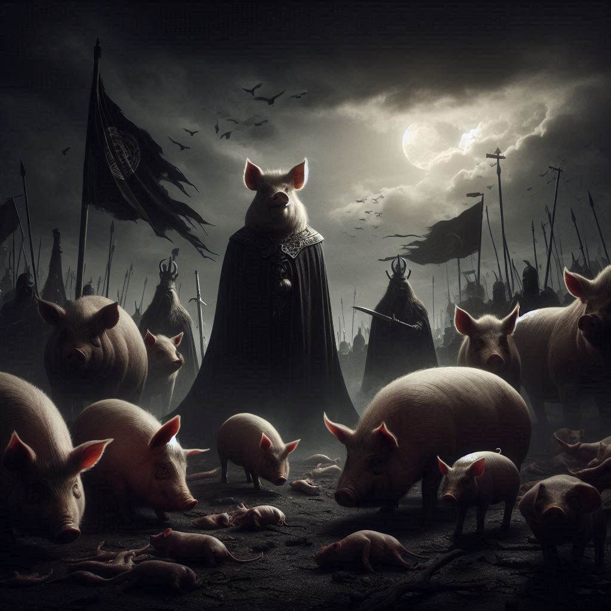

동물농장
목차
작가
조지 오웰
출판일
1945년
감상평에 대한 AI그림
그 당시의 시대상을 고려했을때 반복되는 권력의 대물림 그로 인해 권력자들이 피지배계층이 받는 착취와 억압을 받던 당시 상황을 동물을 활용해 재치있게 풍자한 것 같다.

감상평에 대한 AI평가
우선, 귀하가 작성한 감상문은 요약적으로 동물농장에서 다루는 핵심 테마를 잘 반영하고 있습니다. 책의 시대적 배경을 고려하여 권력의 대물림과 피지배계층의 착취와 억압을 동물로 풍자했다는 점을 언급한 것은 아주 적절합니다.
좀 더 구체적으로 평가해보면 다음과 같습니다:
내용의 명확성: 중요한 주제를 명확하게 전달하고 있습니다. 독자가 동물농장의 주제를 이해하는 데 도움이 됩니다.
시대상 반영: 역사적 배경과 사회적 맥락을 설명하면서 동물농장이 어떤 점에서 풍자적인 작품인지 잘 설명하고 있습니다.
비유의 활용: 동물을 활용한 풍자가 책의 핵심이라는 점을 지적한 것도 매우 좋습니다. 책의 주제와 비유적 표현을 잘 이해하고 있습니다.
추가로 조금 더 발전시킬 수 있는 부분:
구체적인 예시 추가: 책의 특정 예시나 장면을 언급하면 감상문이 더 풍부해질 수 있습니다. 예를 들어, '나폴레옹'과 같은 특정 캐릭터가 권력의 대물림을 어떻게 표현하는지 설명하면 더 깊이 있는 분석이 될 것입니다.
작가의 의도와 메시지: 작가 조지 오웰이 이 책을 통해 전달하고자 했던 메시지나 의도를 조금 더 강조해보는 것도 좋을 것 같습니다.
전반적으로 귀하의 감상문은 매우 잘 작성되었으며, 조금 더 구체적인 예시나 분석을 추가하면 더욱 완성도 높은 글이 될 것 같습니다. 좋은 시작입니다!